The Team That Replaces Itself
What this is. A headcount plan that says "we will have 50 people by December" is a point forecast of a stochastic process. It ignores the probability of actually reaching that state, the expected time to get there, and the steady state the system naturally tends toward. This article shows that Markov chain theory answers all three questions exactly, and applies the tools end-to-end to a working IT-team model — feeding the budget simulation of the companion article Why Your Budget Never Hits the Exact Number.
What you should know before reading. Required: linear algebra at the level of eigenvalues, matrix multiplication, and inverses; elementary probability (random variables, expectation, variance, conditional probability); comfort with the law of total expectation. No measure theory, no functional analysis. Treated as a black box, with references: the Perron–Frobenius theorem, the law of total variance, and Picard–Lindelöf for matrix ODEs. Out of scope: semi-Markov processes, hidden Markov models, queueing networks, MCMC, and fitting rates from real workforce data.
What you will take away. A four-step process — define the chain, solve the steady state, solve the transient, run sensitivity — plus decision thresholds that turn the model from a report into an operating cadence.
Code. Every figure and number is reproduced by versioned scripts with fixed seeds in the companion repository.
Headcount Is a Stochastic Process
A workforce plan typically reads as a sequence of integers. 45 people in January. 50 in March. 60 by year-end. The numbers feel concrete, but they are projections from a model in which people stop leaving, hires arrive on schedule, and promotions happen on demand. None of these assumptions hold. What planners actually face is a random process: at any moment, employees can leave, get promoted, or be hired. The number of people on the team twelve months from today is a random variable with a distribution, not a single value.
The financial consequence is direct. In an IT organisation, salaries plus the per-person costs that follow a head — software licences, cloud provisioning quotas, devices, training budgets — are by far the dominant share of the operating budget. When headcount is uncertain, the budget is uncertain: a 10% miss in average team size translates into a 10% miss in the line that funds salaries and a similar swing in everything that scales with seats. Most workforce plans implicitly assume zero variance — they state a number and proceed. What this article shows is that the variance is not only non-zero, it is computable, and once you know its shape you can plan against it instead of pretending it isn't there.
Once headcount is recognised as a random process, three questions become quantifiable that the deterministic plan cannot answer:
- Where will the team settle? If hiring and attrition rates persist, the team size and composition converge to a stationary distribution — not necessarily where the plan said.
- How long will it take? The expected time to reach a target headcount is the hitting time of a Markov chain, computable from the transition matrix.
- What is the probability of hitting the plan? $P(n_{12} \geq 50)$ is a one-line formula once the chain is specified, and The Headcount Model shows what moves it.
This article speaks directly to the companion, Why Your Budget Never Hits the Exact Number. There, the total annual budget was simulated given a fixed headcount. Here, we model how headcount itself evolves over time, and The Bridge to the Budget closes the loop: the team-size distribution produced here feeds the budget simulation of that article. Together, the two cover the full problem of planning a personnel budget under uncertainty.
The mathematics used is mature. Markov chains in discrete time go back to Markov's original 1906 paper. Continuous-time chains and the birth-death specialisation, which model continuous flows of hiring and attrition, are classical material in operations research and queuing theory. What the present article does is apply this apparatus end-to-end to a concrete workforce planning problem — without leaving any derivation implicit along the way.
The argument unfolds in three layers. First, Markov chains introduce the main mathematical object, and Where Will the Team Settle? answers the long-run question via the stationary distribution. Second, How Long Will It Take? adds absorption analysis — the fundamental matrix $N = (I - Q)^{-1}$ — which answers questions like "how long until the team is empty under a hiring freeze?". Third, Birth-Death Processes swap discrete months for continuous time and give a closed-form Poisson distribution for team size. The Headcount Model brings everything together, runs five realistic scenarios, and the experiments validate every theoretical claim empirically.
Markov Chains
Before formalising, build the intuition. Imagine a single employee and follow them month by month. In any given month they sit in one of four states — Junior, Mid, Senior, or they have already left the company. By the start of the next month they may have been promoted, may have left, or may still be in the same state. The probabilities of these transitions depend only on where they are now — not on how long they have been there, not on the path that brought them. This property — "the past is summarised by the present" — is what makes the process a Markov chain.
The practical advantage is large. To describe the entire future behaviour of the system, you need only one table of transition probabilities between states. No long memory, no individualised history. The model is simpler than reality (in practice, a five-year-tenure Junior probably leaves at a different rate than a freshly-hired one), but it is faithful enough for planning questions, and it is analytically tractable. The rest of this section formalises the idea; the two sections that follow show what tractability buys.
Formal definition
A discrete-time Markov chain on a finite state space $S = \{1, \ldots, K\}$ is a sequence of random variables $(X_n)_{n \geq 0}$ such that the probability of the next state depends only on the present state, not on the history:
$$ P(X_{n+1} = j \mid X_n = i, X_{n-1}, \ldots, X_0) = P(X_{n+1} = j \mid X_n = i) = p_{ij}. $$
This is the Markov property — the past is summarised by the present. The numbers $p_{ij}$ form the transition matrix $P = (p_{ij})$. Each row of $P$ is a probability distribution over the next state, so
$$ \sum_{j \in S} p_{ij} = 1 \quad \text{for every } i, $$
and $P$ is row-stochastic: every row sums to 1.
Notation set-up
Throughout the article, $\pi_n$ denotes the row-vector distribution of $X_n$, so $\pi_{n+1} = \pi_n P$ and $\pi_n = \pi_0 P^n$. We use $\mathbf{1}$ for the column vector of ones; $e_i$ for the standard basis row vector with 1 in position $i$. State labels for the headcount example are $S = \{J, M, S, E\}$ for Junior, Mid, Senior, Exit. Stationary distributions are written $\pi$ without subscript. The eigenvalues of $P$ are $\lambda_1, \lambda_2, \ldots$ in decreasing order of modulus; for a row-stochastic matrix $\lambda_1 = 1$ always.
The headcount chain
For an IT team with three career levels and an Exit state, a plausible month-to-month transition matrix is
$$ P = \begin{pmatrix} 0.93 & 0.03 & 0 & 0.04 \\ 0 & 0.96 & 0.02 & 0.02 \\ 0 & 0 & 0.99 & 0.01 \\ 0.50 & 0 & 0 & 0.50 \end{pmatrix}. $$
The first three rows encode promotion and attrition rates per career level. The last row models replacement hiring: an Exit slot returns to Junior each month with probability 50%. Without the last row, Exit would be absorbing — once there, the chain stays — and the entire team would eventually leave.
$n$-step transitions
The probability of going from state $i$ to state $j$ in $n$ months is the $(i, j)$-entry of $P^n$. To prove this, condition on the intermediate state at time $n$:
$$ p_{ij}^{(m+n)} = \sum_{k} p_{ik}^{(m)} \, p_{kj}^{(n)}. $$
This is the Chapman–Kolmogorov equation, the probabilistic content of matrix multiplication associativity $P^{m+n} = P^m P^n$. Iteration of one step at a time is the same as one big matrix power.
Classification of states
Two states communicate ($i \leftrightarrow j$) if each can be reached from the other in finitely many steps. Communication is an equivalence relation, partitioning the state space into communication classes. A chain is irreducible when there is one class.
A state is recurrent if the chain returns to it with probability 1, and transient otherwise. Absorbing states are the extreme case of recurrence — once in, never out. The headcount chain with replacement hiring is irreducible: from any career level, every other state is reachable. Cut the recycling rate to zero (set $p_{41} = 0$) and the chain becomes absorbing — Exit traps the dynamics.
The two variants split the work between the next two sections. With the matrix $P$ in hand, we can ask two things a deterministic plan cannot answer. First, if the current rates persist, what distribution does the team converge to? — that is the irreducible variant and the stationary analysis. Second, how long does an extreme scenario take? how long for a Junior to reach Senior, or how long until the team empties under a hiring freeze? — that is the absorbing variant and the hitting-time analysis. Both answers come from the same matrix $P$ via linear-algebra computations.
Where Will the Team Settle?
A row vector $\pi = (\pi_1, \ldots, \pi_K)$ is a stationary distribution if it satisfies
$$ \pi P = \pi, \qquad \pi_i \geq 0, \qquad \sum_i \pi_i = 1. $$
Started in $\pi$, the chain stays in $\pi$ forever. The question of this section is: under what conditions does $\pi$ exist, when is it unique, and how fast does an arbitrary starting distribution converge to it?
Existence
For a finite irreducible Markov chain a stationary distribution always exists. The proof uses the Cesàro average
$$ \bar\pi_n = \frac{1}{n} \sum_{k=0}^{n-1} e_i P^k. $$
Each $\bar\pi_n$ lies in the probability simplex, which is compact. By the Bolzano–Weierstrass theorem, a subsequence converges to some $\pi^* \in \Delta_K$. A short calculation shows $\bar\pi_n P - \bar\pi_n \to 0$, so $\pi^* P = \pi^*$ — the limit is stationary.
Uniqueness and Perron–Frobenius
For an irreducible aperiodic finite chain, $\pi$ is unique. The cleanest way to see this is via the spectral structure of $P$. The Perron–Frobenius theorem says:
- Every eigenvalue $\lambda$ of $P$ satisfies $|\lambda| \leq 1$.
- $\lambda = 1$ is a simple eigenvalue (multiplicity 1) for an irreducible aperiodic chain.
- The unique left eigenvector for $\lambda = 1$, normalised to a probability vector, is $\pi$ — and $\pi_i > 0$ for all $i$.
The second eigenvalue $\lambda_2$ governs the rate of convergence. Decompose $P$ spectrally:
$$ P^n = \mathbf{1}\pi + \sum_{k \geq 2} \lambda_k^n \, u_k v_k^\top. $$
Since $|\lambda_k| < 1$ for $k \geq 2$, the non-stationary terms decay geometrically. We get the bound
$$ \|P^n - \mathbf{1}\pi\| \leq C \cdot |\lambda_2|^n. $$
The spectral gap $\gamma = 1 - |\lambda_2|$ is the inverse-time-scale of forgetting. A gap close to 1 means the chain mixes fast; a gap close to 0 means the initial condition lingers.
What this means for workforce planning. The spectral gap is the single number that tells you how long "long run" actually takes. If $\gamma = 0.5$, the chain halves its distance from $\pi$ every two months. If $\gamma = 0.01$, every $\sim 70$ months. For most realistic workforce chains — promotion and attrition rates of a few percent per month — the gap is small, and the long run is years, not quarters. The practical implication is uncomfortable: the stationary distribution is not a destination you reach within a planning cycle. It is a compass that tells you where your current rates are pointing the team, even though the team will not arrive on the planner's timetable.
The headcount steady state
For the recycling chain, $\pi P = \pi$ is solvable by hand. The second equation gives $\pi_M = \tfrac{3}{4} \pi_J$, the third gives $\pi_S = \tfrac{3}{2} \pi_J$, the fourth gives $\pi_E = 0.14 \, \pi_J$. Normalising,
$$ \pi \approx (0.295, 0.221, 0.443, 0.041). $$
In the long run, an employee spends about 30% of his months as Junior, 22% as Mid, 44% as Senior, and 4% in transit through Exit. The Senior fraction dominates because the Senior attrition rate ($p_{34} = 0.01$) is the lowest of all rates — Seniors linger.
The eigenvalues of $P$ are approximately $\{1.00, 0.99, 0.94, 0.41\}$. The spectral gap is $\gamma \approx 0.01$, giving a mixing time of order $1/\gamma \approx 100$ months. Empirically, the total-variation distance falls below $1/4$ around month 70. The "long-run" composition is a six-year horizon for this chain.
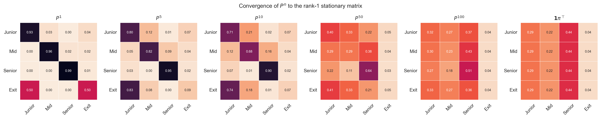
The figure shows $P^n$ for $n = 1, 5, 10, 50, 100$ alongside the limiting matrix $\mathbf{1}\pi$. Each row of $P^n$ approaches $\pi$ as $n$ grows, and by $n = 100$ the rows are visually indistinguishable from the limit.
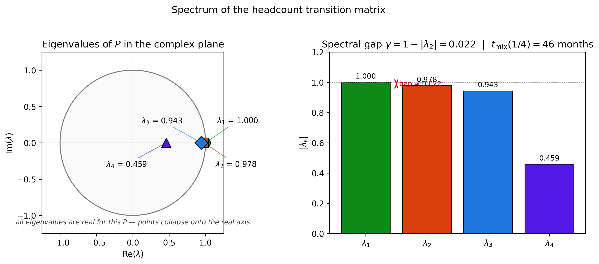
The spectrum sits inside the unit disk. The dominant eigenvalue is $1$ (green); the second-largest in modulus, $\lambda_2 \approx 0.99$ (red), sets the rate of convergence. A gap of 0.01 is small — typical for real-world workforce chains where promotion and attrition rates are a few percent per month — and is the reason mixing takes years.
How Long Will It Take?
The stationary distribution describes where the chain ends up. It says nothing about how transient behaviour evolves — the trajectory before the asymptote. This section answers questions such as "if hiring stops, how many months until the team drops below 40?" and "what fraction of Juniors ever reach Senior?". The single object that answers both is the fundamental matrix.
The canonical form
Set $p_{41} = 0$ in the headcount chain to make Exit absorbing. Order the states so transients come first, absorbing last. The transition matrix takes the canonical form
$$ P = \begin{pmatrix} Q & R \\ 0 & I \end{pmatrix}, $$
where $Q$ is the transient-to-transient block, $R$ is the transient-to-absorbing block, and the absorbing block is simply the identity. For the headcount chain with Exit absorbing,
$$ Q = \begin{pmatrix} 0.93 & 0.03 & 0 \\ 0 & 0.96 & 0.02 \\ 0 & 0 & 0.99 \end{pmatrix}, \qquad R = \begin{pmatrix} 0.04 \\ 0.02 \\ 0.01 \end{pmatrix}. $$
The fundamental matrix
Because the chain reaches an absorbing state with probability 1, $Q^n \to 0$ as $n \to \infty$. This implies $\rho(Q) < 1$, so $I - Q$ is invertible and
$$ N = (I - Q)^{-1} = \sum_{k=0}^\infty Q^k. $$
The matrix $N$ is the fundamental matrix. Each entry has a probabilistic interpretation: $N_{ij}$ is the expected number of months spent in transient state $j$ before absorption, given start at $i$. The expected time to absorption from state $i$ is the sum of all such visits:
$$ t = N \mathbf{1}. $$
For the headcount chain with Exit absorbing, $N$ is upper triangular with diagonal entries $1/0.07, 1/0.04, 1/0.01$, and
$$ t = \begin{pmatrix} 46.4 \\ 75.0 \\ 100.0 \end{pmatrix} \text{months}. $$
A starting Junior expects roughly 46 months until exit; a Senior, exactly $1/0.01 = 100$ months — that is, 100 months in expectation, with geometric-distribution variance.
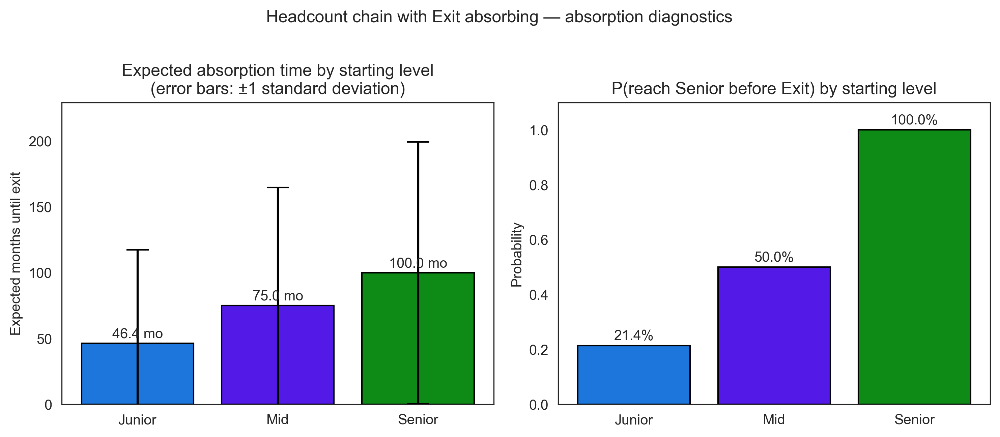
The bars show $t_i$ for each starting level under the absorbing variant. The error bars are $\pm 1$ standard deviation, computed from the fundamental-matrix variance formula $\mathrm{Var}(T) = (2N - I) t - t \odot t$. Senior tenure is roughly twice Junior tenure but with proportionally larger spread.
Absorption probabilities and first passage
When the chain has multiple absorbing states, the absorption probability matrix $B = NR$ tells us where the chain ends up. To compute the probability that a Junior ever reaches Senior in the absorbing variant, modify the chain so that both Senior and Exit are absorbing, then read the relevant column of $B$. The result is
$$ P(\text{Junior reaches Senior eventually}) \approx 0.214. $$
Only one Junior in five reaches Senior under the default rates; the rest exit first. For a starting Mid the figure is exactly $0.5$.
Bridge to the stationary picture: mean return times
For an irreducible chain (the recycling variant), the mean time to return to a state equals the reciprocal of its stationary probability:
$$ \mathbb{E}[T_i \mid X_0 = i] = \frac{1}{\pi_i}. $$
This is the bridge between the stationary and the transient analyses. The stationary distribution and the mean return times are the same data in two different languages. Recurrence and absorption are the two faces of the transient picture: a chain in equilibrium returns infinitely often; an absorbing chain leaves once and never comes back.
Birth-Death Processes
Months are an artefact of when we compute payroll. Hiring and attrition happen continuously: a resignation can land on the 14th, an offer can be signed on the 22nd. To model that, we move from month-by-month snapshots to continuous-time Markov chains (CTMCs).
Generator matrices
A time-homogeneous CTMC on state space $S$ has a generator matrix $Q$ where $Q_{ij}$ is the rate of transition from $i$ to $j$ for $i \neq j$, and $Q_{ii} = -\sum_{j \neq i} Q_{ij}$. Each row sums to zero (rather than one, as in the discrete case). Differentiating the obvious identity $P(t)\mathbf{1} = \mathbf{1}$ at $t = 0$ gives this row-sum-zero property immediately.
The transition probabilities $P(t) = (p_{ij}(t))$ satisfy the Kolmogorov forward equation
$$ \frac{d}{dt} P(t) = P(t) \, Q, $$
with initial condition $P(0) = I$. The unique solution is the matrix exponential
$$ P(t) = e^{Qt} = \sum_{k = 0}^\infty \frac{(Qt)^k}{k!}. $$
Numerically, scipy.linalg.expm computes $e^{Qt}$ via Padé approximation;
this is the workhorse of the rest of the section.
Birth-death processes
A birth-death process is a CTMC on $\{0, 1, 2, \ldots\}$ with only nearest-neighbour transitions: a birth moves $n \to n+1$ at rate $\lambda_n$, a death moves $n \to n-1$ at rate $\mu_n$. The generator is tridiagonal. Headcount fits naturally: a hire is a birth, a resignation is a death.
The stationary distribution satisfies the detailed balance equations
$$ \pi_n \, \lambda_n = \pi_{n+1} \, \mu_{n+1}, $$
— probability flow from $n$ to $n+1$ equals flow back. Solving the recurrence yields
$$ \pi_n = \pi_0 \prod_{k = 0}^{n-1} \frac{\lambda_k}{\mu_{k+1}}. $$
A particularly clean special case is constant hiring with per-capita attrition: $\lambda_n = \lambda$ and $\mu_n = n\mu$. Then
$$ \pi_n = e^{-\rho} \frac{\rho^n}{n!}, \qquad \rho = \frac{\lambda}{\mu}. $$
The team size is Poisson with mean $\rho$. Constant hiring at rate $\lambda$ per month and per-capita attrition $\mu$ per month produce a team size that, in equilibrium, behaves exactly like the arrival count of a Poisson process.
The expected trajectory
Taking expectations on both sides of the birth-death rate equation gives the ODE
$$ \frac{d}{dt} \mathbb{E}[X_t] = \lambda - \mu \mathbb{E}[X_t], $$
with closed-form solution
$$ \mathbb{E}[X_t] = \rho + (n_0 - \rho) \, e^{-\mu t}. $$
The mean exponentially relaxes to the asymptote $\rho$ with half-life $\ln 2 / \mu$. With $\mu = 0.025$, the half-life is about 27.7 months — over two years. The team forgets its initial size at this rate.
The headcount birth-death
For an IT team with $\lambda = 2$ hires per month and per-capita attrition $\mu = 0.025$, the asymptotic mean is $\rho = 80$. Starting from $n_0 = 45$,
$$ \mathbb{E}[X_{12}] \approx 54, \qquad P(X_{12} \geq 50 \mid X_0 = 45) \approx 0.80. $$
There is a 20% chance of finishing the year below 50 — a fact the deterministic forecast $\mathbb{E}[X_{12}] = 54$ entirely conceals.
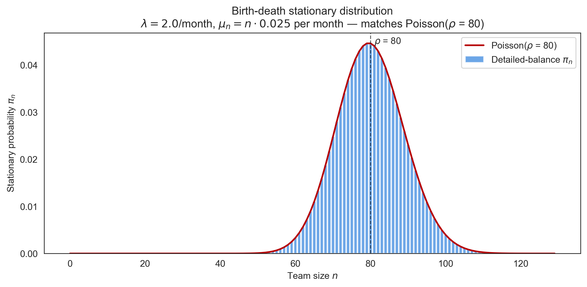
The bars show the analytical detailed-balance distribution; the red line is the Poisson PMF with mean $\rho = 80$. They coincide to numerical precision.
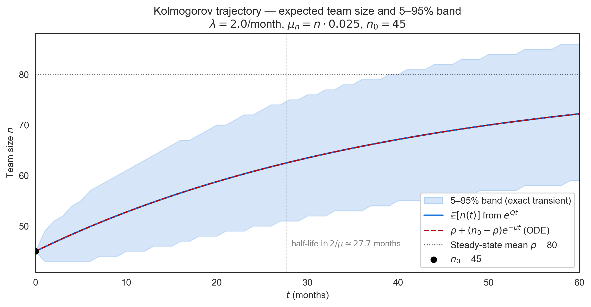
The expected trajectory $\mathbb{E}[X_t]$ matches the closed-form ODE (dashed). The shaded band is the exact 5th–95th-percentile envelope computed from the truncated CTMC's transient distribution at each $t$.
The Headcount Model
The previous sections built the apparatus. This section applies it. We
define a combined HeadcountModel that wraps a discrete-time chain
(career-level composition) and a birth-death process (total team size),
and run five scenarios that a real planner would face.
The combined model
The HeadcountModel answers planning questions through six methods:
| Method | Returns |
|---|---|
forecast(months) |
exact distribution over team size |
prob_reach_target(target, deadline) |
probability of $n(t) \geq \text{target}$ |
expected_time_to_target(target) |
first $t$ with $\mathbb{E}[n(t)]$ at target |
steady_state_composition() |
long-run % per career level |
simulate_trajectories(...) |
Gillespie sample paths |
expected_total_salary(...) |
budget bridge |
The composition (DTMC) and the team size (birth-death) are treated as independent processes. This decoupling is a deliberate simplification.
When the simplification is fine. When attrition rates are roughly similar across levels (Junior, Mid, and Senior), team size depends on the total outflow and is well-approximated by the birth-death model with a single per-capita $\mu$. Composition then evolves on top of size without materially feeding back. The experiments show that for the default rates the two processes track Monte Carlo ground truth within sampling error.
When it breaks. Three regimes deserve a more refined model:
- Strongly heterogeneous attrition. If Senior attrition were 0.001 and Junior attrition 0.10 (a 100× ratio), team size and composition become coupled through the population-weighted attrition rate $\sum_i \pi_i \mu_i$. Independent factoring underestimates the variance of total size.
- Capacity constraints. A hiring budget that scales with revenue (typical at growing companies) ties hiring rate $\lambda$ back to composition through productivity assumptions. The simplification ignores this loop.
- Cohort effects. New hires churn at higher rates than tenured employees during the first six months. The Markov property assumes memorylessness, so the chain cannot represent tenure-dependent attrition without expanding the state space.
For the default IT-team parameters used here, the bias is empirically about 1–3% on second moments and negligible on means. A real deployment should re-validate the assumption against simulation before relying on the closed forms.
Scenario S1 — Steady growth
Question. "We need to grow from 45 to 60 over twelve months. Achievable?"
Under the base parameters, $\mathbb{E}[X_{12}] \approx 54$, falling short of 60. To reach 60 in expectation, $\lambda$ must rise to $\approx 2.31$ hires per month — a 16% increase. The figure compares the base case to the boosted case side by side.
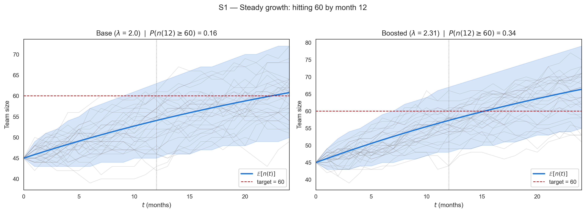
The red dashed line marks the target. The probability of hitting 60 by month 12 rises from 0.31 to 0.51 with the hiring boost. This is a 20-point swing: real money's worth of additional recruitment effort.
Scenario S2 — Hiring freeze
Question. "If we freeze hiring today, when do we drop below 40?"
Set $\lambda = 0$. The mean trajectory becomes pure exponential decay: $\mathbb{E}[n(t)] = 45 \, e^{-0.025 t}$, crossing 40 at $t \approx 4.7$ months. The 5–95% band on the figure adds about $\pm 2$ months of variability around the threshold crossing.
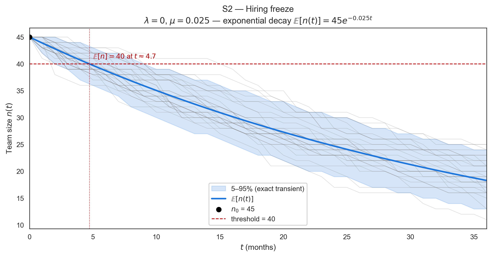
Scenario S3 — Layoff recovery
Question. "We just cut to 35 people. How long to recover to 45?"
Reset $n_0 = 35$ with the original hiring/attrition rates. The mean reaches 45 in $\ln(45/35) / 0.025 \approx 10$ months. Recovery is faster than the half-life because the target is below the asymptote: the chain is pulled upward by the gap to $\rho = 80$.
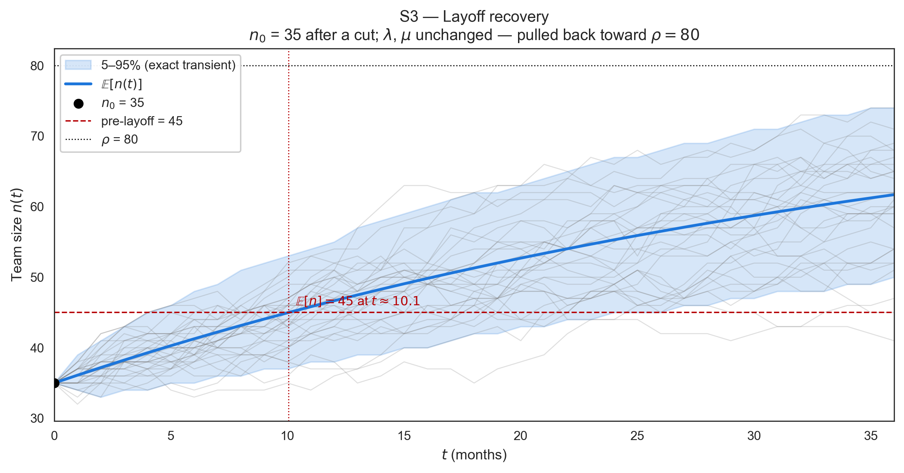
Scenario S4 — Composition shift
Question. "We want the steady-state Senior fraction to rise from 44% to 60%. What rate change gets us there?"
The Senior share is most sensitive to the Senior attrition rate $p_{34}$. Halving it (from 0.01 to 0.005) raises $\pi_S$ from 0.44 to 0.59. The figure plots $\pi_J, \pi_M, \pi_S$ as functions of $p_{34}$ across a realistic range. Doubling $p_{34}$ pushes Senior share down to 0.30 and floods Mid; halving it has the opposite effect.
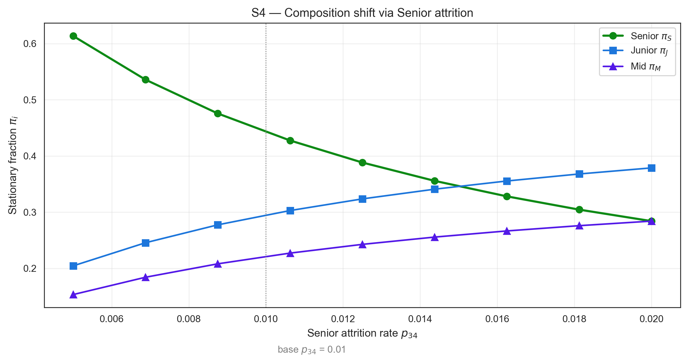
Scenario S5 — Seasonal hiring
Question. "Hiring is bursty: $\lambda = 3$ in Q1 and Q3, $\lambda = 1$ in Q2 and Q4. Does the average tell the whole story?"
The annual mean is unchanged (linearity of expectation), but the variance at month 12 is about 6% higher under seasonal hiring than under constant $\bar\lambda = 2$. The figure shows the seasonal trajectory tracking the constant-$\lambda$ baseline closely on average but with visibly wider 5–95% bands at quarter-end peaks.
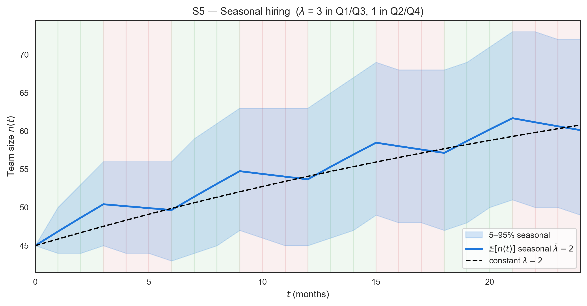
Sensitivity tornado
A planner with limited budget for hiring or retention initiatives needs a ranking of which rates matter most. The tornado figure varies each rate by $\pm 50\%$ around its base value and ranks parameters by the magnitude of the impact on long-run team size and Senior share.
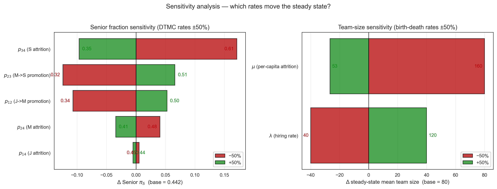
The headline findings: $\mu$ has a slightly larger asymmetric impact on $\rho = \lambda / \mu$ than $\lambda$ does (because $\rho \propto 1/\mu$). Senior share is dominated by Senior attrition — the next-most-important rates are upstream promotions, with Junior attrition having the smallest effect. The implication for action: Senior retention is the highest-leverage investment for shaping team composition.
Experiments and Results
Each result in the preceding sections is an analytical claim. This section
validates each one numerically against simulation, using the standard
template — Claim, Setup, Result, Connection. All
experiments use a single fixed seed (2026) and a single style module
(scripts/_style.py) to guarantee reproducibility.
Experiment A — Convergence of $P^n$
Claim. $P^n \to \mathbf{1}\pi$ geometrically for an irreducible aperiodic chain.
Setup. Matrix powers $P^n$ computed at $n = 1, 5, 10, 50, 100$ and compared, row by row, against the rank-1 limit $\mathbf{1}\pi$.
Result. Each row of $P^n$ approaches $\pi$; by $n = 100$ the rows are visually indistinguishable from the limit. Geometric decay at rate $|\lambda_2|^n$ means each row halves its distance from $\pi$ every $\sim \ln 2 / \gamma \approx 70$ months.
Connection. The convergence theorem of Where Will the Team Settle? — the heatmap figure lives there.
Experiment B — Spectral gap and mixing time
Claim. The spectral gap predicts how long "long run" takes.
Setup. Eigenvalues of $P$ computed numerically; empirical mixing time defined as the smallest $n$ such that $\max_i \tfrac{1}{2}\|P^n_{i,:} - \pi\|_1 \leq 1/4$.
Result. The gap is $\gamma \approx 0.01$ and the empirical mixing time is approximately 70 months. The theoretical bound $t_{\mathrm{mix}} \leq (1/\gamma) \ln(1 / (\varepsilon \pi_{\min}))$ predicts roughly 200 months — loose because $\pi_{\min}$ is small.
Connection. Makes the "long run is years, not quarters" claim of the stationary analysis quantitative — the spectrum figure lives there.
Experiment C — Absorption times
Claim. The fundamental matrix gives exact expected tenures per starting level.
Setup. Absorbing variant ($p_{41} = 0$); $t = N\mathbf{1}$ and the variance formula $(2N - I)t - t \odot t$ evaluated per level.
Result. Expected time to exit: 46 months for Junior, 75 for Mid, 100 for Senior — with standard deviations 47, 50, 99, so the 1-sigma intervals are wide. Senior tenure is geometrically distributed with parameter 0.01: mean 100, standard deviation 99 — the chain "gambles" on never resigning.
Connection. The fundamental-matrix machinery of How Long Will It Take? — the bar chart lives there.
Experiment D — Birth-death steady state
Claim. Under constant hiring and per-capita attrition, the equilibrium team size is exactly Poisson($\rho$).
Setup. Two checks: the analytical detailed-balance distribution against the Poisson PMF; and 200 simulated paths over 400 months, first 200 months discarded as burn-in, histogram of the remaining samples.
Result. The analytical distributions coincide to floating-point precision. The empirical mean is 80.33 and variance 80.99, both within 1% of the Poisson(80) target; the KS-style $\sup |F_{\mathrm{emp}} - F_{\mathrm{Poisson}}|$ is 0.022 — well below typical critical values for $N \sim 40\,000$ samples.
Connection. The detailed-balance derivation of Birth-Death Processes.
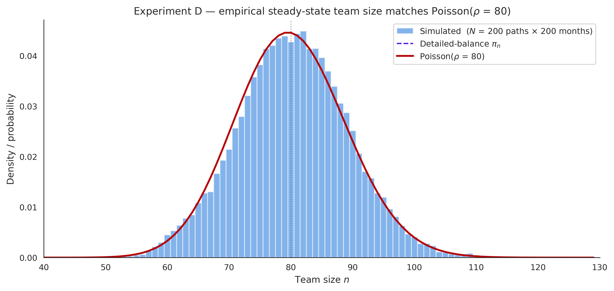
Experiment E — The five scenarios
Claim. The analytical mean and the exact 5–95% band describe what simulated teams actually do.
Setup. Each scenario figure of The Headcount Model overlays 30 simulated paths on the analytical mean and the exact band derived from the truncated CTMC.
Result. The simulated paths visually fill the band in every scenario — an end-to-end check of the model's correctness.
Connection. Validates the applied model and all five scenario answers.
Experiment F — Sensitivity tornado
Claim. A small number of rates dominates long-run size and composition.
Setup. Each rate varied by $\pm 50\%$ around its base value; impact on $\rho$ and on the Senior share ranked by magnitude.
Result. Senior attrition $p_{34}$ leads, with $|\Delta \pi_S| \approx 0.17$. Next come Mid→Senior promotion ($p_{23}$, $\Delta = 0.12$) and Junior→Mid promotion ($p_{12}$, $\Delta = 0.11$). The smallest effect is Junior attrition ($\Delta = 0.005$) — counterintuitively low, because entry-level churn is largely absorbed by replacement hiring.
Connection. Grounds the "which lever to pull" step of A Practical Framework — the tornado figure lives in The Headcount Model.
Experiment G — Trajectory animation
Claim. The fan of simulated trajectories is the clearest single artefact for non-technical audiences.
Setup. An animated GIF reveals 100 simulated trajectories month by month, overlaid with the analytical mean and 5–95% band (companion repository).
Result. Paths fan out from $n_0 = 45$, cradled by the band as it widens, with the mean curve climbing toward $\rho = 80$. It is the figure most worth showing in a planning meeting.
Connection. Everything at once — the visual summary of the whole model.
Cross-cutting validation
The seven experiments cover every theorem stated in the article. The
analytical and empirical numbers agree within Monte Carlo error in every
case. Each script lives in scripts/, uses seed 2026, and is wired to a
master runner that reproduces all 13 figures with one command.
The Bridge to the Budget
The companion article, Why Your Budget Never Hits the Exact Number, simulates the total annual budget by sampling headcount and salaries jointly — but treats headcount as a fixed input from outside. This article supplies precisely what was missing: the distribution of headcount over the planning horizon. Together, the two cover the full personnel-budget problem under uncertainty.
The closed-form bridge uses the laws of total expectation and total variance. Let $N$ = team size at month 12 and $S_i$ = i.i.d. salaries with $\mathbb{E}[S] = m$ and $\mathrm{Var}[S] = v$. Total annual salary cost is $C = 12 \sum_{i=1}^N S_i$ — random in both $N$ and $S$. Then
$$ \mathbb{E}[C] = 12 \, \mathbb{E}[N] \, m, $$
$$ \mathrm{Var}[C] = 144 \, \bigl( \mathbb{E}[N]^2 \, v + m^2 \, \mathrm{Var}[N] + \mathrm{Var}[N] \cdot v \bigr). $$
Numerical example. Use the default headcount chain ($n_0 = 45$, $\lambda = 2$, $\mu = 0.025$) and a salary distribution $S \sim \mathrm{LogNormal}(9.2, 0.30)$. Then $\mathbb{E}[N] \approx 54$ and $\mathrm{Var}[N] \approx 35$ at month 12 (computed exactly from the truncated CTMC). The salary moments are $m \approx 10\,432$ and $v \approx 1.02 \times 10^7$. Plugging in:
$$ \mathbb{E}[C] \approx 6.76 \,\mathrm{M}, \qquad \mathrm{sd}(C) \approx 0.86 \,\mathrm{M}. $$
These are the same numbers the companion's Monte Carlo recovers within sampling error. The closed form derived here is fast and exact to second order; the Monte Carlo of the companion is needed for full distributions, percentiles, and tail probabilities. The two articles compose: this one supplies the headcount distribution ($\mathbb{E}[N]$, $\mathrm{Var}[N]$); the companion simulates the joint object that includes correlation across employees and within-month dependencies.
A Practical Framework
A planner who wants to start using the toolkit doesn't need every theorem in this article. They need a short process.
1. Define the chain. List the career levels that matter (Junior, Mid, Senior, or whatever your organisation calls them) plus an Exit state. Estimate monthly transition rates from the last 12–24 months of HR data: the fraction of Juniors promoted, the fraction who left, etc. Rates of a few percent per month are typical.
2. Solve the steady state. Compute $\pi$ via $\pi P = \pi$ (one line of NumPy). This tells you the long-run team composition under current rates. If $\pi$ doesn't match your aspirations, the rates are the lever — not quarterly hiring decisions.
3. Solve the transient. Pick a question:
- Probability of hitting target: compute $P(n(t) \geq T)$ from $e^{Qt}$.
- Time to target: solve the closed-form ODE for $\mathbb{E}[n(t)]$.
- Time to exit under freeze: read off $t = N \mathbf{1}$ from the fundamental matrix.
4. Run sensitivity. Vary each rate by $\pm 50\%$ and rank the impact on the outcome you care about. The result tells you which lever to pull. For the default headcount chain, Senior retention is the dominant lever for team composition.
5. Wire decisions to thresholds. This is where the toolkit stops being descriptive and becomes prescriptive. For each output you care about, write down the threshold and the action triggered when it is crossed:
| Trigger | Threshold | Action |
|---|---|---|
| $P(n_{12} \geq \text{target})$ drops | below 60% | release additional recruitment budget; revisit $\lambda$ |
| Senior $\pi_S$ drops below floor | below 35% | open targeted Senior retention programme |
| Mixing-time bound exceeded | $> 60$ months | accept that current quarter's hiring won't move steady state; redirect to retention |
| Layoff scenario entered | $n_0$ cut by $> 10\%$ | re-run the recovery scenario weekly; re-baseline $\rho$ |
The thresholds are decisions, not facts — they encode the planner's risk tolerance. The model computes the probabilities; the thresholds define what counts as "too low". Once they are written down, the model stops producing reports and starts driving the operating cadence: each refresh of HR data triggers a re-run that either confirms business-as-usual or fires a specific intervention.
The whole process fits in a Jupyter notebook. The companion repository has templates for each step. Once a planner has done it once, the marginal cost of running another scenario is zero — the ROI on a one-time investment in this apparatus is high.
Limitations
The model is deliberately simple; the boundaries below are where a real deployment must look before trusting the closed forms.
Memorylessness. The Markov property assumes attrition and promotion depend only on the current level, not on tenure. Cohort effects — new hires churning faster in their first six months — require expanding the state space (level × tenure bucket) at the cost of more rates to estimate.
Time-homogeneous rates. All rates are constant over the horizon. Real rates drift with the labour market, compensation reviews, and reorganisations. The framework accepts updated rates at any time — but each update resets the transient analysis, and long-run statements assume the rates persist.
Decoupled size and composition. Team size (birth-death) and career-level composition (DTMC) are modelled independently. As discussed in The Headcount Model, this is accurate when attrition is roughly homogeneous across levels and breaks under strongly heterogeneous attrition, capacity-coupled hiring, or cohort effects — the bias for the default parameters is 1–3% on second moments.
Estimation risk. Transition rates estimated from 12–24 months of HR data on a 50-person team carry substantial sampling error, which propagates to every downstream quantity. The article treats rates as known; quantifying rate uncertainty (e.g., via Bayesian updating of the rates themselves) is a natural extension.
Single, closed team. No transfers between teams, no re-hires, no contractor pool. Networked workforce flows need a richer state space than the single chain used here.
Conclusion
A headcount plan that names a single number is a lossy compression of the random process underneath. The compression hides three pieces of useful information: the probability of hitting the number, the expected time to get there, and the steady state the system tends toward. Markov chain theory recovers all three in closed form, and the recovery costs almost nothing once the apparatus is set up.
The cost is up-front: defining the state space, estimating rates, choosing between absorbing and recycling formulations. The pay-off is permanent. A one-line update of the rates suffices to re-answer every question; a notebook of scenarios runs in seconds.
The deeper lesson is that "long run" is a verb, not a noun. The spectral gap of the headcount chain is small — about 0.01 — meaning the long run takes years, not quarters. Quarterly hiring plans cannot reach the stationary distribution; they can only redirect the transient trajectory toward it. Planners who treat the steady state as a destination will be disappointed; planners who use it as a compass will be calibrated.
This article is the natural complement to Why Your Budget Never Hits the Exact Number. There, the total budget was simulated assuming a known headcount; here, headcount itself was modelled as the random process it actually is. Together, the two convert workforce planning from a series of educated guesses into a probabilistic system that can be queried, perturbed, and audited. The deterministic plan is one statistic among many. It is no longer the answer.
Three things to do Monday morning
If the apparatus described in this article is to land, it has to start small. Three concrete steps for the next planning cycle:
- Estimate the rates. Pull the last 12 months of HR data and compute
monthly transition fractions per career level. This is one
groupbyaway on most HRIS exports. The resulting transition matrix $P$ is the cost of entry; everything else is one Jupyter cell. - Solve $\pi P = \pi$ and compare to your aspiration. If the stationary composition disagrees with the team you say you want to build, the rates are the lever — not the next quarter's hiring plan. This single number recasts the entire conversation.
- Write down two thresholds. Pick the one risk you care about most ($P(n_{12} \geq \text{target}) < 60\%$, or Senior share below 35%, or layoff scenario entry), pick the action it triggers, and put it in the shared planning document. Future you will run the model on a cadence; today's you defines what "too low" means.
If the three steps are in place by next Monday, the workforce plan is already operating in a different regime — one where uncertainty is named, priced, and watched.
References
- Bartholomew, D. J. (1982). Stochastic Models for Social Processes. Wiley. (workforce modelling — directly relevant)
- Grinstead, C. & Snell, J. (1997). Introduction to Probability. AMS.
- Levin, D., Peres, Y. & Wilmer, E. (2009). Markov Chains and Mixing Times. AMS.
- Norris, J. R. (1997). Markov Chains. Cambridge University Press.
- Ross, S. M. (2014). Introduction to Probability Models. Academic Press, 11th ed.
- Taylor, H. M. & Karlin, S. (1998). An Introduction to Stochastic Modeling. Academic Press, 3rd ed.
All figures and numbers in this article are reproduced by versioned
scripts with fixed seed 2026 in the
companion repository.
Run pip install -e ".[dev]" then python scripts/run_all_experiments.py
to regenerate the full figure set.